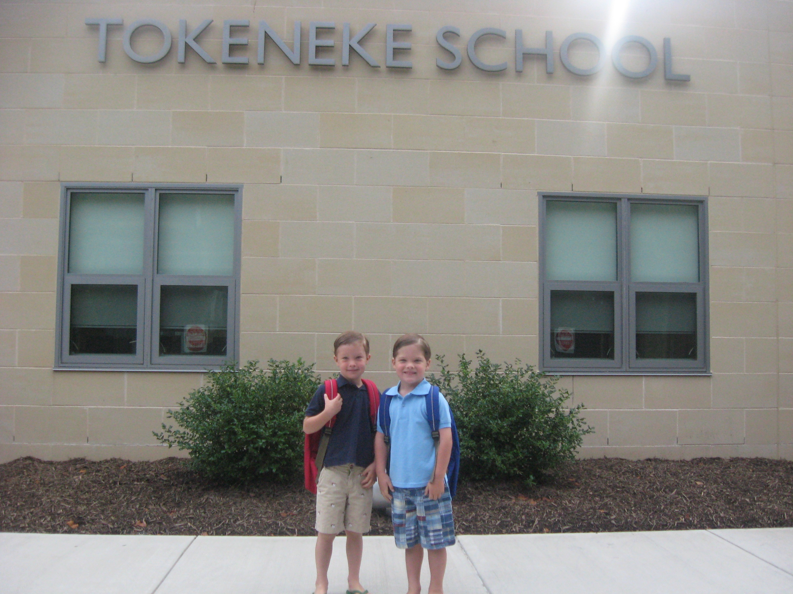
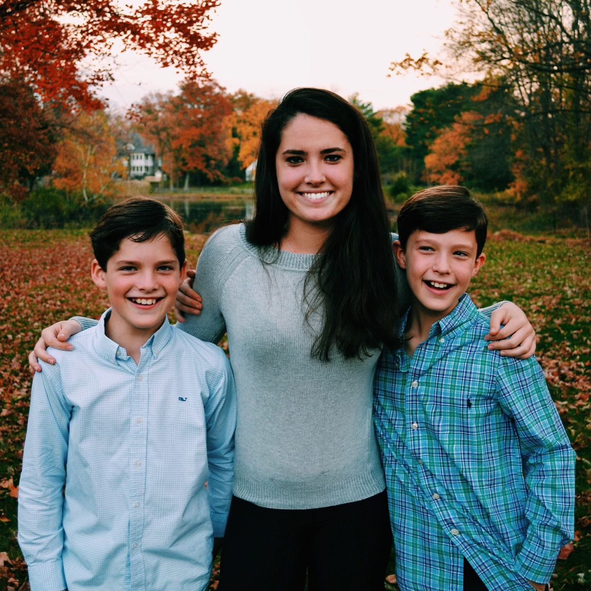
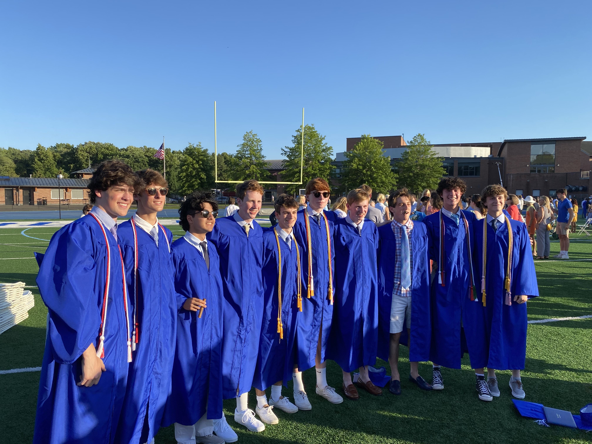
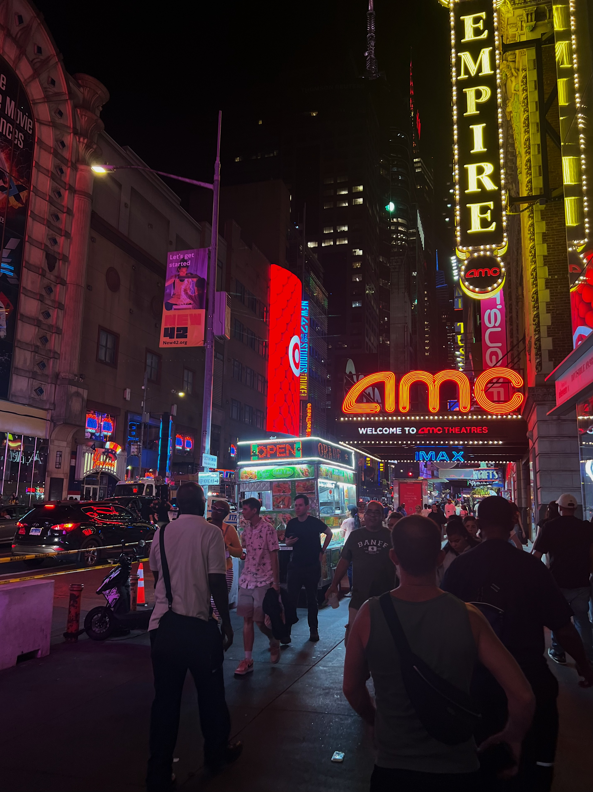
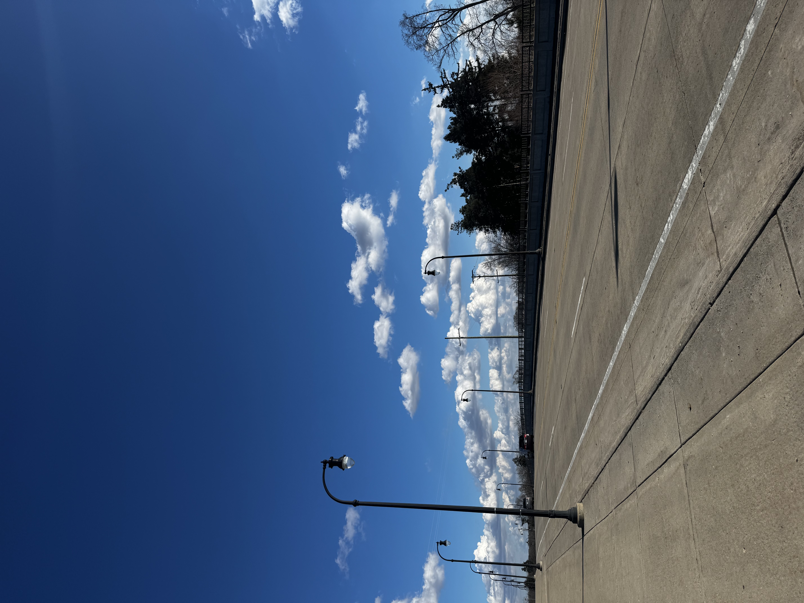

Vision
Born in Pennsylvania on June 1, 2004.
Grew up in Connecticut with my twin brother, Cameron.
Alongside our older sister, Emma.
Began attending Darien High School in 2018.
Graduated in 2022, initially planning to pursue Biology in college.

Started at the University of Michigan in Fall 2022.
Changed major to Computer Science after exploring Biology, Economics, Law, and Mathematics.


Picked up a Math minor and on track to graduate in May 2026 after four years.
Raised on the East Coast, I aspire to move to New York after college.
Open to many possibilities — California, Seattle, and Boston are favorites, but considering others as well.
With my degree, I hope to begin my career as a Software Engineer.
Recently I've become fascinated by robotics and am eager to explore opportunities in the field.
Beyond work, I’m passionate about starting a business and writing screenplays, combining focus with creative expression.
As my career grows, I aim to move into planning, leadership, and creative roles, guiding a team of engineers.
After my tech career, I hope to focus on environmental conservation work, spending my days protecting animals and the planet we call home.